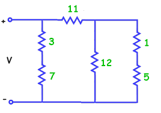

Double и допускает последовательное или параллельное соединение элементов цепи.data Circuit a = R Double | Par Circuit Circuit | Seq Circuit Circuit deriving Show
Например:
R 20 -- сопротивление номиналом 20 R 100 `Seq` R 10 -- последовательное соединение двух сопротивлений R 100 `Par` R 10 -- параллельное соединение двух сопротивлений

Цепь 1.
resistance :: Circuit -> Double, которая вычисляла бы суммарное сопротивление произвольной двухполюсной цепи. При этом используются следующие формулы: при последовательном подключении элементов складываются значения сопротивлений, а при параллельном подключении складываются проводимости:resistance сопротивление цепи 1.Circuit элемент, соответствующий ключу. При этом замкнутому состоянию ключа пусть соответствует нулевое, а разомкнутому -- бесконечное сопротивление (его можно получить с помощью выражения 1/0). Поместите вместо элементов с номиналами 11 и 7 ключи и вычислите сопротивление цепи при различных сочетаниях их состояний.connect :: Circuit -> Bool, которая бы возвращала ответ на вопрос: замкнута цепь или нет. Проверьте работу этой функции при различных сочетаниях состояний ключей.Использование бесконечного значения для представления разомкнутой цепи чревато неприятностями, не очень красиво и не позволит работать с не вещественными числами. Правильным и идиоматичным путём будет определить отдельный тип, описывающий состояние цепи в электротехнических терминах.
Resistance, который может представлять разомкнутую цепь Break, цепь замкнутую накоротко Short и цепь, обладающую конечным сопротивлением Value Double.Resistance определите операции параллельного (<||>) и последовательного (<&&>) соединения. И переопределите функцию resistance так чтобы она возвращала тип Resistance. Напишите короткое определение функции connect, использующее результат функции resistance.При расчёте электрических цепей переменного тока роль сопротивления играет импеданс, который выражается комплексным числом. Для цепей переменного тока следует добавить реактивные элементы: ёмкости и индуктивности. Импеданс ёмкости
Data.Complex. Параметризуйте тип Resistance так чтобы кроме типа Double он мог содержать в себе произвольные типы. Добавьте в тип Circuit представление для ёмкости и индуктивности -- типы C Double и L Double. Опишите с помощью этого типа цепь 2, показанную на рисунке:
Цепь 2.
resistance так, чтобы она могла обрабатывать ёмкости и индуктивности. Для постоянного тока конденсаторы соответствуют разрыву цепи, а катушки индуктивности -- короткому замыканию. Вычислите активное сопротивление цепи 2.impedance и вычислите импеданс для цепи 2. В полученном комплексном числе действительная часть должна быть равна активному сопротивлению цепи, а мнимая -- реактивному (волновому).Мы построили тип, описывающий внутреннюю структуру результата -- сопротивления. Это не просто число, оно может принимать различные по смыслу значения, которые по-разному комбинируются друг с другом. Если внимательно посмотреть на определения операторов (<||>) и (<&&>), то можно заметить их сходство с логическими операторами над булевыми значениями. Если исключить из рассмотрения величины Value, то получатся точные определения логических операций И и ИЛИ, где роль True и False играют Short и Break, соответственно. Такое совпадение структур позволяет использовать то, что мы знаем о логике. В частности, закон де Моргана.
Осталось определить понятие отрицания для сопротивления. Это проводимость, величина, обратная сопротивлению. Ведь при параллельном соединении складываются именно проводимости, значит наша догадка верна!
inv, которая преобразовывала бы сопротивления в проводимости и обратно. С её помощью закона де Моргана, определите операцию (<||>) через (<&&>) и inv.resistanceToBool :: Resistance a -> Bool и boolToResistance :: Bool -> Resistance a, которые преобразовывали значения двух типов, которые мы признали подобными, друг в друга.Функторы
Типы в Haskell -- это больше чем описание данных. Это и описание логической или математической структуры образуемой данными. Мы увидели это на примере типа для чисел, которые могут иметь особые нечисловые значения. Такой подход универсален и наиболее часто встречающийся пример -- тип Maybe a, говорящий о том, что величина значения типа a может быть неопределена.
Maybe с помощью команды :i. Посмотрите, как работает функция find, отыскивающая элемент с заданными свойствами в списке.(<$>) для обработки множества значений в списке. Примените этот оператор к значениям типа Maybe. Можно ли сказать, что типы [a] и Maybe a имеют сходную структуру? Определите функции listToMaybe :: [a] -> Maybe a и maybeToList :: Maybe a -> [a].(<$>) с помощью команды :t (<$>). Посмотрите (с помощью команды :i в интерпретаторе) какие ещё знакомые вам типы принадлежат к классу Functor.Control.Applicative. Теперь нам доступны новые возможности для работы с типами Maybe a и [a]. Посмотрите на то, как действуют операторы <|> и <*>, вычислив в GHCi следующие выражения. Попробуйте вместо Maybe a использовать тип [a]. Объясните своими словами, для чего нужны операторы <$>, <|>, <*>Nothing <|> Just 5 Just 3 <|> Just 5 Just 3 <|> Nothing Nothing <|> Nothing Nothing <*> Just 5 Just (4*) <*> Just 5 Just (2*) <*> Nothing (+) <&> Just 3 <*> Just 7 (+) <&> Nothing <*> Just 7 (+) <&> Just 3 <*> Nothing
bisection p a b, имеющую следующий тип:
Здесь функцияbisection :: Eq t => (Double -> t) -> Double -> Double -> Maybe Double
p :: Eq b => Double -> t определяет условие, которое должно изменяться в искомой точке, а точки a и b определяют отрезок на котором точка ищется. Метод состоит в следующем:
- Если на границах отрезка условие принимает одинаковые значения, считаем, что искомой точки на отрезке нет;
- если отрезок достаточно мал, решением является его средняя точка;
- в противном случае решение находится либо в правой, либо в левой половине отрезка (Для отношения "либо" используйте оператор
(<|>).
Double представляет числа с плавающей точкой.
bisection (\x -> x < 2) 1 3 bisection (\x -> x < 2) 0 1 bisection (\x -> x^2 < 2) 1 2 (^2) <$> bisection (\x -> x^2 < 2) 1 2 bisection (\x -> cos x > 1 - 1/x) 0 2 bisection (\x -> 1/x > 0) -1 2 bisection (\x -> isNaN (sqrt (3 - x^2))) 0 2
bisection так чтобы для решения задачи можно было бы задавать не отрезок, а начальную точку для поиска ближайшего корня. Начиная с этой точки можно двигаться вправо с увеличивающимся шагом до тех пор, пока либо не будет встречен корень, либо пока точка не уйдёт слишком далеко. Реализуйте этот алгоритм в виде функции findRoot.
Проверьте правильность её работы на нескольких примерах.findRoot p x = go x 1e-5 where go x dx | abs x > 1e16 = empty | otherwise = bisection p x (x+dx) <|> _
Applicative и Alternative. В определении класса Applicative присутствует полиморфная функция pure, которая позволяет ввести любое значение в функтор. Для экземпляров класса Alternative определено универсальное значение empty, соответствующее нейтральному значению по отношению к оператору (<|>). Замените в определении bisection функцию Just на pure, а значение Nothing на empty. Убедитесь в том, что функция работает верно.bisection и посмотрите какой тип будет выведен компилятором. Объясните какие ограничения накладываются на типы оргументов этой функции и почему.bisection и findRoot работают с любыми альтернативными функторами: Maybe, [], IO и т.д.
bisection (\x -> x < 2) 1 3 -- IO findRoot (\x -> x^2 < 2) 1 :: Maybe Double findRoot (\x -> x^2 < 2) 1 :: [Double] findRoot (\x -> x^2 < 2) 1 :: [Double] findRoot (\x -> cos x > 1 - 1/x) 1 take 3 $ findRoot (\x -> cos x > 1 - 1/x) 1 take 4 $ concat $ findRoot (\x -> tan x < x) <$> [1..]